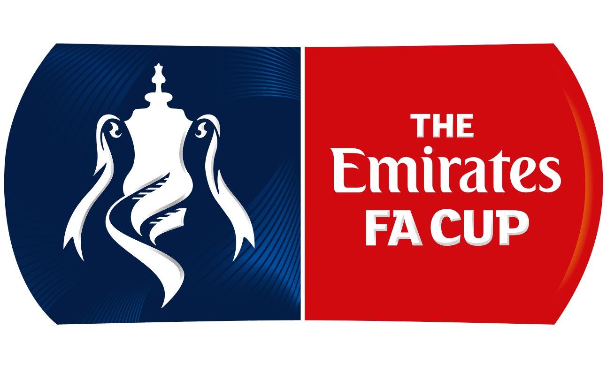
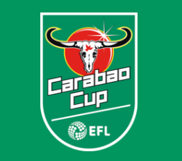

Действующие кубковые турниры
Двумя важнейшими кубковыми турнирами в Англии являются Кубок Англии и Кубок Лиги. Однако существует и ряд других национальных кубков, разыгрываемых между клубами на разных уровнях.
Кубок Англии, впервые проведённый в 1872 году, является старейшим и самым престижным национальным кубковым турниром в мире. В розыгрыше Кубка Англии принимает участие более 700 клубов с 1 по 11 уровень пирамиды футбольных лиг Англии. В августе каждого года проводится матч на Суперкубок Англии, в котором принимают участие обладатели Кубка Англии и чемпионы Премьер-лиги.
Кубок Футбольной лиги вторым по значимости клубным турниром в Англии, и разыгрывается среди 92 клубов из Премьер-лиги и Футбольной лиги.
Победители Кубка Англии и Кубка лиги квалифицируются в Лигу Европы УЕФА.